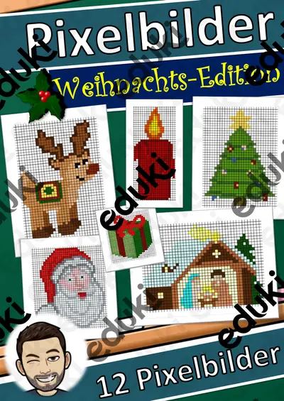

Lesespur: Pixelbilder: wie der Computer Bilder speichert – Lesespurgeschichte mit Rätseln (Klasse 3)
Pixelbilder – wie der Computer Bilder speichert – Lesespurgeschichte Informatik (Klasse 3/4)Schick deine Klasse auf eine Lesespur durch eine Pixel-Werkstatt! Pia, Malte und Zeynep aus der 4a besuchen in den Herbstferien einen Ferienkurs im Medienzentrum. Die Medienpädagogin Frau Hartmann zeigt ihnen, woraus Bilder auf dem Bildschirm bestehen: Unter der Lupe werden winzige Kästchen sichtbar – die Pixel. An der Mosaikwand entdecken die Kinder, dass schon die Römer Bilder aus kleinen Steinchen legten. Am Kästchentisch malen sie ein Herz nach einem Code aus 1 und 0, an den Farblampen mischen sie rotes, grünes und blaues Licht, und am Perlentisch stecken sie Bilder Reihe für Reihe. In der Fotoecke lernen sie den Sensor einer Kamera und das Megapixel kennen, am Riesenposter sehen sie, warum ein vergrößertes Bild eckige Treppenstufen bekommt, und am Computerplatz erfahren sie, dass ein Bild für den Computer nur eine lange Liste von Zahlen ist. Zeyneps Stoff-Pinsel Tupfi ist immer dabei. Am Ende jedes Abschnitts verrät ein Hinweis den nächsten Ort auf dem Plan – nur wer genau liest, findet den Weg und sammelt alle geheimen Buchstaben zum Lösungswort.
Die perfekte Lesespur für INFORMATIK und Medienbildung in der 3. und 4. Klasse – ideal für Projekttage, Vertretungsstunden und fächerübergreifend mit Deutsch, HSU, Kunst und Mathematik: Sie verbindet sinnentnehmendes Lesen mit Grundideen der Bildcodierung und kleinen Sachrechnungen. Das Material ist SOFORT EINSETZBAR und in DREI DIFFERENZIERUNGSSTUFEN (leicht ★ / mittel ★★ / schwer ★★★) angelegt.WICHTIG: Das komplette Material ist sowohl in FARBE als auch in SCHWARZ-WEISS enthalten – ideal zum Sparen von Druckkosten.DAS IST ENTHALTEN
- Lesespurgeschichte in 3 Niveaus (leicht, mittel, schwer)
- farbiger Plan der Pixel-Werkstatt als Suchkarte
- Hörverstehen mit QR-Code zur MP3 (selbstständiges Hören mit Kopfhörern)
- vier Aufträge auf dem Weg: eine Zuordnung, ein Quiz, eine Rechenaufgabe und ein Steckbrief
- Rätselseite (Wörter-Suchsel + Fragen zu Pixelbildern)
- Ausmalbild zum Thema (Basteltisch mit Kästchenbild, Steckperlen und Pixelkatze)
- ausführliches Lösungsblatt für die Lehrkraft
- alles zusätzlich als komplette Schwarz-Weiß-VarianteSO GEHT DIE LESESPURDie Kinder lesen ab START, finden im Text den nächsten Ort, suchen ihn auf dem Plan und lesen bei dieser Station weiter. An jeder richtigen Station gibt es einen Buchstaben. Eingeplante Sackgassen (Papierkorb, Getränkekiste, Zimmerpalme, Lautsprecher) sind keine Stationen und dienen der Selbstkontrolle. Am Ende werden die gesammelten Buchstaben umgestellt und ergeben ein geheimes Lösungswort. (Die Lösungen sind selbstverständlich nur im Lösungsblatt für die Lehrkraft enthalten.)INHALTLICHER SCHWERPUNKTPixel als kleinster Bildpunkt, Mosaik als Vorläufer des Pixelbildes, Raster und Zeilen, ein Schwarz-Weiß-Bild als Code aus 1 und 0, Farbmischung mit rotem, grünem und blauem Licht, Sensor und Megapixel, Vergrößern und Auflösung, ein Bild als Liste von Zahlen und Speicherbedarf.ABGEDECKTER LEHRPLAN (Klasse 3/4, Informatik / Medienbildung)
- Heimat- und Sachunterricht (LehrplanPLUS Bayern) – Jahrgangsstufe 3/4: Leben in einer Medien- und Konsumgesellschaft – Medien und digitale Bilder verstehen.
- Kunst – Bilder aus Flächen und Farben gestalten, Farbmischung erleben.
- Mathematik – Jahrgangsstufe 3/4: Multiplizieren, Subtrahieren und Halbieren im Sachzusammenhang.
- Deutsch – Lesen: Sachtexte sinnentnehmend lesen; Zuhören: einem Hörtext folgen (Hörverstehen mit MP3).
- Informatische Grundbildung / Medienkompetenz: Daten codieren, Bilder als Zahlen speichern.
Geeignet für Freiarbeit, Stationenlernen, Vertretungsstunden, Wochenplan, Projekttage und als Einstieg in die Arbeit mit digitalen Bildern. Klassenstufe 3/4.
Ähnliche Materialien

Lesespur: Kann ein Computer lernen?: KI für Kinder – Lesespurgeschichte mit Rätseln (Klasse 3)

Pixelbilder Weihnachten (Kunst, Vertretung, Konzentrationsübung)

Pixelbilder Halloween (Kunst, Vertretung, Konzentrationsübung)

Bildschirm Lückentext mit Wortspeicher Hörverstehen und Suchsel

Lesespur: Der Computer – Lesespurgeschichte mit Rätseln (Klasse 7)

Pixelbilder Super Mario (Kunst, Vertretung, Konzentrationsübung)

Computer Lückentext mit Wortspeicher Hörverstehen und Suchsel